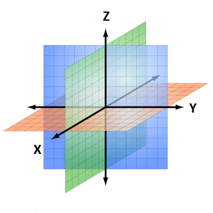
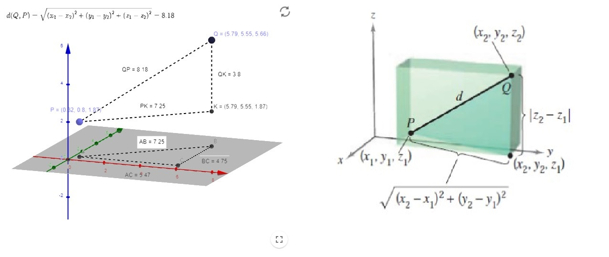

1.2. Vectores en el espacio#
En esta (breve) sección generalizaremos las ideas de la anterior, escrita para vectores en \(\mathbb{R}^2\), al espacio tridimensional, \(\mathbb{R}^3\).
1.2.1. Coordenadas en el espacio#
Para identificar puntos en el espacio 3D necesitaremos un sistema de coordenadas tridimensional. Para ello consideramos un eje \(Z\) perpendicular a los dos ejes, \(X\) e \(Y\), como se muestra en la siguiente figura:
{kind=link}
Puedes consultar más información sobre esto en la Wiki (página de la que hemos sacado la figura anterior): https://es.wikipedia.org/wiki/Sistema_de_coordenadas.
Con el sistema que estamos eligiendo, se separa el espacio en ocho octantes (fíjate que en 2D hay cuatro cuartos): el primero de estos octantes corresponde a la zona en la que las tres coordenadas son positivas.
Entonces, un punto, \(P\), en el espacio se caracteriza por un triple ordenado, \((x,y,z)\), donde:
\(x\) es la distancia desde el plano \(YZ\) a \(P\),
\(y\) es la distancia desde el plano \(XZ\) a \(P\),
\(z\) es la distancia desde el plano \(XY\) a \(P\).
{kind=link}
NOTA: Elegiremos siempre un sistema de coordenadas dextrógiro: el giro corto desde la parte positiva del eje \(X\) hacia la parte positiva del eje \(Y\) iría en el sentido contrario a las agujas del reloj (como en 2D). Puedes ver más detalles aquí, jugando con la conocida regla de la mano derecha o regla del sacacorchos: https://en.wikipedia.org/wiki/Right-hand_rule.
1.2.2. Distancia en el espacio#
Para encontrar la distancia entre dos puntos en el espacio, podemos utilizar el Teorema de Pitágoras dos veces, para obtener:
Esperamos que la siguiente figura te ayude. Si no fuera así, puedes jugar con la siguiente aplicación en Geogebra: https://www.geogebra.org/m/QjnTG76X.
{kind=link}
1.2.3. Ecuación de la esfera#
Las esferas en 3D juegan un papel similar a las circunferencias en 2D. Serán importantes a lo largo de este curso. Por eso mismo, vamos a dedicar unos minutos a definirlas correctamente.
Definition (Esfera)
La esfera de centro \(\left(x_{0}, y_{0}, z_{0}\right)\) y de radio \(r\) es el conjunto de puntos en \(\mathbb{R}^3\) que están a una distancia \(r\) de \(\left(x_{0}, y_{0}, z_{0}\right)\).
Es decir, utilizando la fórmula anterior para la distancia, es el conjunto de puntos \((x,y,z)\in\mathbb{R}^3\) tales que
o, equivalentemente y más usada en la práctica,
1.2.4. Vectores en el espacio#
Al igual que hacíamos en la sección anterior para vectores en el plano, ahora, en el espacio, denotaremos los vectores por ternas ordenadas, \(\left(v_{1}, v_{2}, v_{3}\right)\), y lo abreviaremos con una letra en negrita, \(\mathbf{v}\) (utiliza una letra con una flecha encima cuando escriba a mano, \(\vec{v}\)). Además:
El vector cero se denota: \(\mathbf{0}=(0,0,0)\).
Los vectores canónicos unitarios serán: \(\mathbf{i}=(1,0,0)\), \(\mathbf{j}=(0,1,0)\) y \(\mathbf{k}=(0,0,1)\).
La notación estándar para un vector puede escribirse: \(\mathbf{v} = v_{1}\mathbf{i} + v_{2}\mathbf{j} + v_{3}\mathbf{k}\).
{kind=link}
De nuevo, análogamente a lo que pasa en 2D, si \(\mathbf{v}\) está representado por el segmento de recta dirigido desde \(P = \left(p_{1}, p_{2}, p_{3}\right)\) hasta \(Q = \left(q_{1}, q_{2}, q_{3}\right)\), entonces
{kind=link}
De todos modos, al igual que en el plano, la forma canónica de un vector es la que tiene como punto inicial el centro de coordenadas, \(\mathbf{0} = (0,0,0)\).
La longitud de un vector será
A diferencia de lo que sucede en el plano, ahora no basta con un ángulo para definir la dirección de un vector. Necesitamos dos ángulos. Suelen elegirse:
\(\theta\) en la proyección del vector en el plano \(XY\),
\(\phi\) para indicar el ángulo que forma el vector con el eje \(Z\).
{kind=link}
Profundizaremos más en esto cuando hablemos de coordenadas esféricas (véase Coordenadas cilíndricas y esféricas).
Ahora podemos definir el vector unitario en la dirección de \(\mathbf{v}\) como
Y, de forma totalmente análoga a los vectores en el plano, definimos las operaciones con vectores en el espacio:
Definition (Suma de vectores y multiplicación por un escalar en 3D)
Sean \(\mathbf{u}=\left( u_{1}, u_{2}, u_{3} \right)\) y \(\mathbf{v}=\left( v_{1}, v_{2}, v_{3} \right)\) vectores y sea \(c\in\mathbb{R}\) un escalar.
El múltiplo escalar de \(c\) y \(\mathbf{u}\) es el vector \(c\mathbf{u} := \left( cu_{1}, cu_{2}, cu_{3}\right)\).
La suma vectorial de \(\mathbf{u}\) y \(\mathbf{v}\) es el vector \(\mathbf{u}+\mathbf{v} := \left( u_{1} + v_{1}, u_{2} + v_{2}, u_{3} + v_{3}\right)\).
Relacionado con el producto escalar, recordemos que
El resultado de multiplicar el vector \(\mathbf{v}\) por el escalar \(c\) tiene la misma dirección que \(\mathbf{v}\) si \(c\) es positivo y la opuesta si \(c\) es negativo.
Dos vectores distintos de \(\mathbf{0}\), \(\mathbf{u}\) y \(\mathbf{v}\), se dicen paralelos si existe algún escalar \(c\) tal que \(\mathbf{u} = c\mathbf{v}\).
1.2.5. Jugando con vectores 3D en Numpy#
¡Venga! Vuelve a leer la Sección Introducción a Numpy y vamos a jugar un poco…
import numpy as np
# Definimos los vectores u y v
u = np.array([2, -7, 3])
v = np.array([1, -7/2, 3/2])
w = np.array([1, -3, 3/2])
# Calculamos la norma de u con la función de NumPy np.linalg.norm
norm_u = np.linalg.norm (u)
print('u: ', norm_u)
print('Norma de u: ', norm_u)
# Calculamos el vector unitario en la dirección de u
u1 = u/norm_u
print('Vector unitario en la dirección de u: ', u1)
# Comprobamos si u y v son paralelos
c = u[0]/v[0]
log = (u == c*v)
if log.all():
print('u y v son paralelos con razón u/v= ',c)
else:
print('u y v no son paralelos')
# Comprobamos si u y w son paralelos
c = u[0]/w[0]
log = (u == c*w)
if log.all():
print('u y w son paralelos con razón u/w= ',c)
else:
print('u y w no son paralelos')
u: 7.874007874011811
Norma de u: 7.874007874011811
Vector unitario en la dirección de u: [ 0.25400025 -0.88900089 0.38100038]
u y v son paralelos con razón u/v= 2.0
u y w no son paralelos